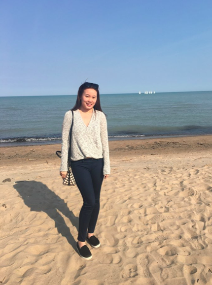

Chelsy Kim
About Me
HI EVERYONE! Welcome to my Digital Fabrication & Engineering Website. In this website, you will see every aspect of my artworks from DAY 1, including the procedures, pictures, and detailed description. Please feel free to contact me anytime if you have any questions!
kimh18@wra.net

I was born in SEOUL, SOUTH KOREA, and my Korean (birth) name is Hyo Yun Kim. My hobbies include making artworks and travelling. Since I was young, I have travelled to over 25 countries, and enjoyed going to every single one of them. I also lived in different parts of the world, including Korea, Philippines, London, and more. Living in many different places has broadened my perspective of viewing everything around me. I hope to travel more and interact with more people!
Back to index